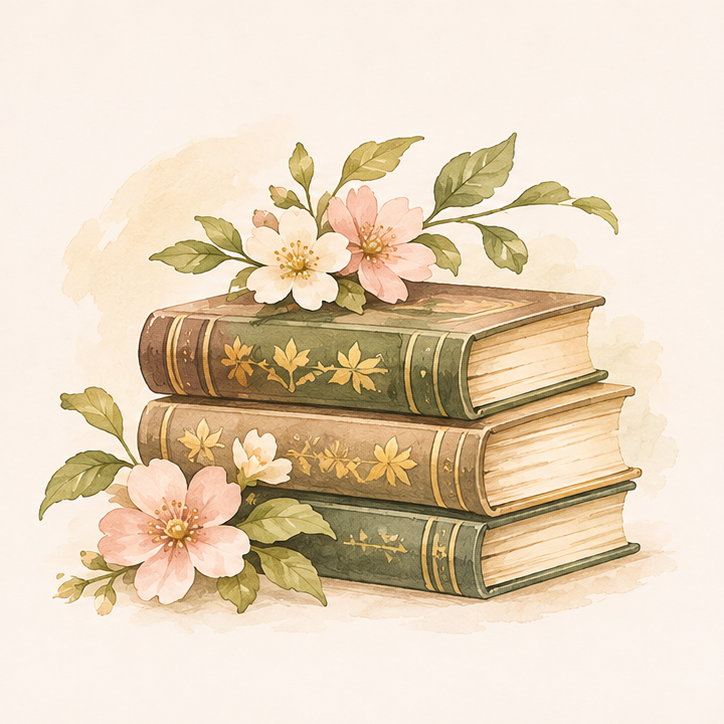
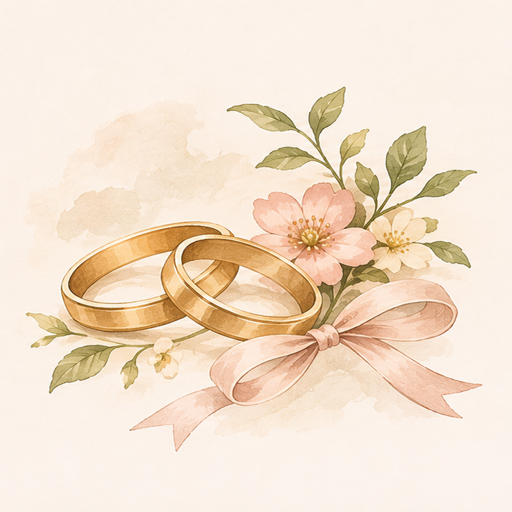
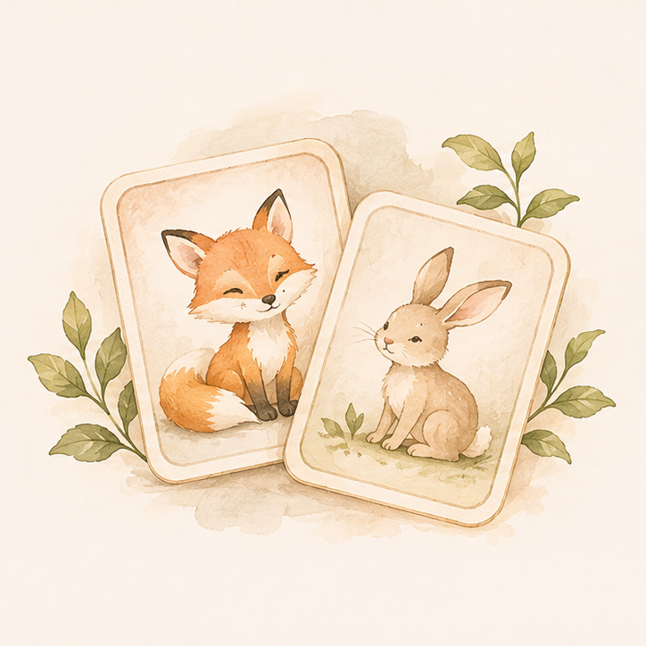

Projekt
Tre utvalda projekt
Digital bookjournal

Ett personligt projekt där mitt intresse för böcker möter webbutveckling. En digital bokhylla där jag samlar lästa böcker, betyg, recensioner och lässtatistik.
Webbsida för ett bröllop

En personlig bröllopswebbplats skapad åt två vänner inför deras stora dag. Här samlas all viktig information för gästerna, tillsammans med ett OSA-formulär där de enkelt kan anmäla sig till bröllopet.
Memory för barn

Ett lekfullt memoryspel för barn där jag kombinerar programmering med färgglad och användarvänlig design. Ett interaktivt spel där barn får träna sitt minne genom att hitta matchande bildpar.

Vem är Josefin Bäck?

Jag studerar webbaserad design och utveckling vid Malmö universitet och tycker om att kombinera
kreativitet med programmering.
Jag gillar att utforska nya idéer, experimentera med design och se hur något som börjar som en
enkel tanke kan växa till ett färdigt projekt. För mig är det minst lika roligt att skapa som
att se slutresultatet!
Här har jag samlat några av mina projekt, både från utbildningen och sådant jag har skapat på egen hand. Varje projekt är en möjlighet att testa nya idéer, utveckla mina kunskaper och lära mig något nytt.